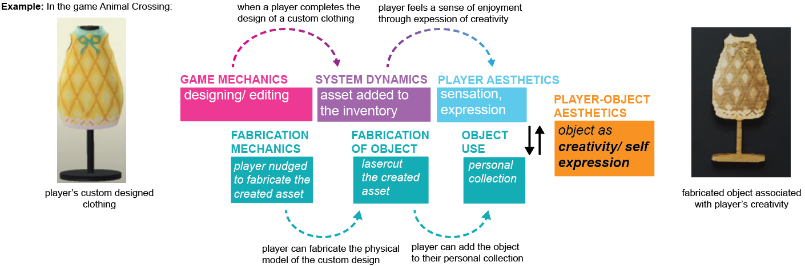
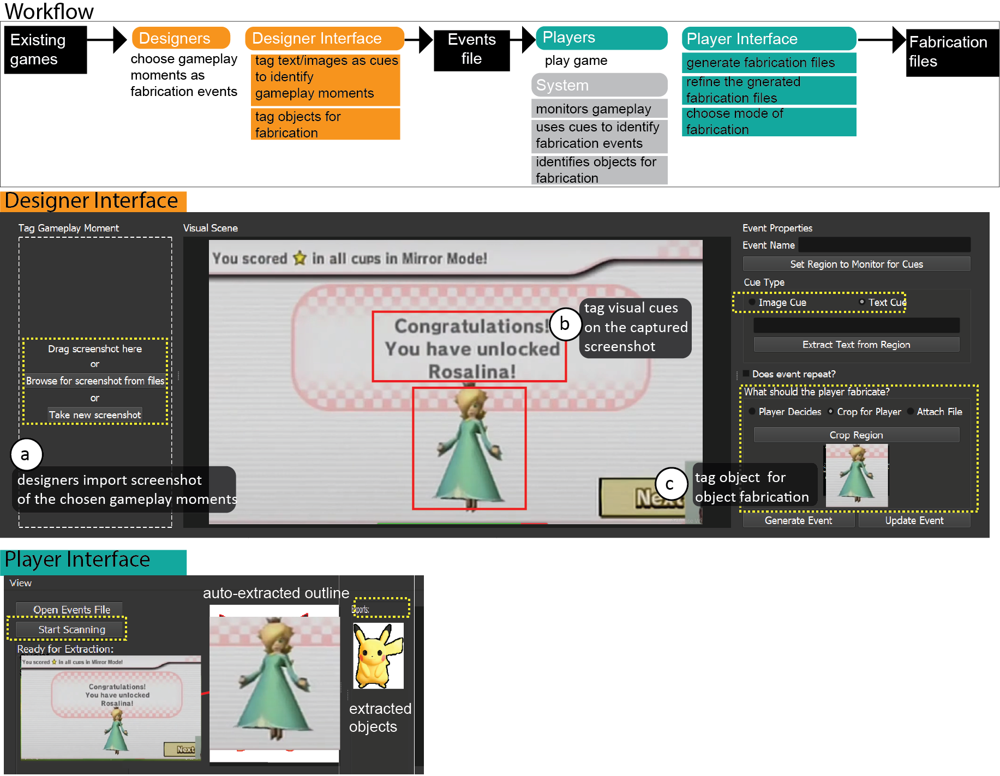
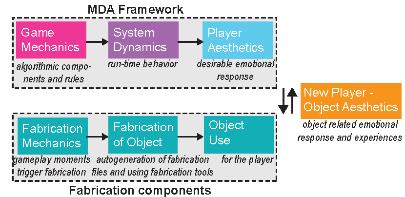
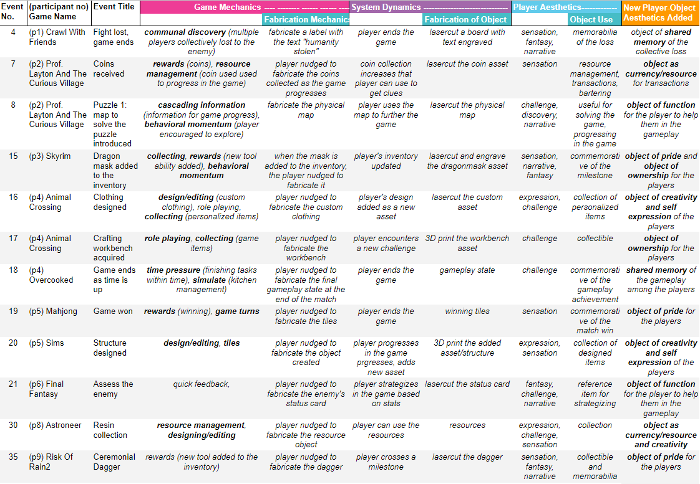
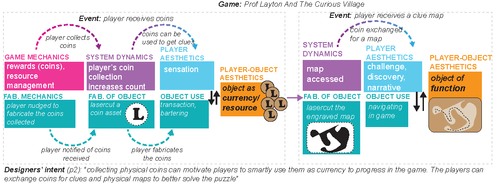
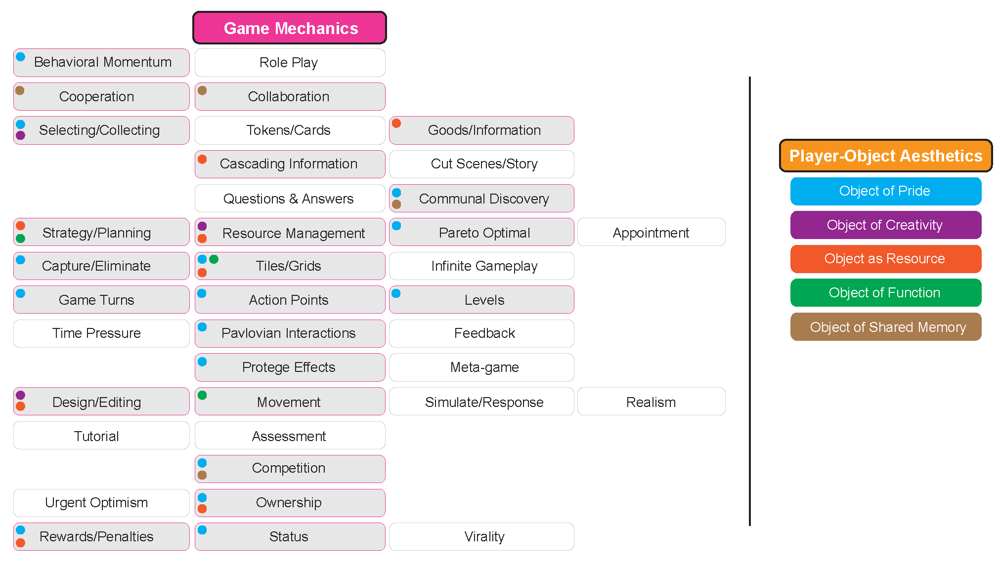

Publication
Dishita Turakhia, Stefanie Mueller, Kayla DesPortes.
Identifying Game Mechanics for Integrating Fabrication Activities within Existing Digital Games
In Proceedings of
Human Factors in Computing ’22.
DOI PDF Talk Slides CHI'22 Talk Video Slides


DOI PDF Talk Slides CHI'22 Talk Video Slides
1 / 42
2 / 42
3 / 42
4 / 42
5 / 42
6 / 42
7 / 42
8 / 42
9 / 42
10 / 42
11 / 42
12 / 42
13 / 42
14 / 42
15 / 42
16 / 42
17 / 42
18 / 42
19 / 42
20 / 42
21 / 42
22 / 42
23 / 42
24 / 42
25 / 42
26 / 42
27 / 42
28 / 42
29 / 42
30 / 42
31 / 42
32 / 42
33 / 42
34 / 42
35 / 42
36 / 42
37 / 42
38 / 42
39 / 42
40 / 42
41 / 42
42 / 42
Identifying Game Mechanics for Integrating Fabrication Activities within Existing Digital Games

Figure 1. To help designers integrate fabrication activities within existing games, we use the Mechanics-Dynamics-Aesthetics (MDA) framework and modify it to f-MDA to identify the game mechanics that allow meaningful integration. For example, in the game of Animal Crossing, the game mechanics that allows designing custom clothing can be used to allow the players to physically fabricate their designs and create objects that are associated with their creativity and self-expression.
Integrating fabrication activities into existing video games provides opportunities for players to construct objects from their gameplay and bring the digital content into the physical world. In our prior work, we outlined a framework and developed a toolkit for integrating fabrication activities within existing digital games. Insights from our prior study highlighted the challenge of aligning fabrication mechanics with the existing game mechanics in order to strengthen the player aesthetics.
In this paper, we address this challenge and build on our prior work by adding fabrication components to the Mechanics-Dynamics-Aesthetics (MDA) framework. We use this f-MDA framework to analyze the 47 fabrication events from the prior study. We list the new player-object aesthetics that emerge from integrating the existing game mechanics with fabrication mechanics. We identify connections between these emergent player-object aesthetics and the existing game mechanics. We discuss how designers can use this mapping to identify potential game mechanics for integrating with fabrication activities.
INTRODUCTION
Fabrication games that combine fabrication activities with a player's gameplay are an emerging area of research in HCI for their potential to augment the gaming experience in several ways. Objects fabricated from the fabrication games can introduce novel interactions in the gameplay (for example, by fabricating customized game-controllers), teach fabrication skills through gameplay, and increase player motivation by bringing the digital content into the physical world. To integrate fabrication activities as part of the gameplay, these fabrication games are typically designed from scratch, which can be a time-consuming process and may require an expertise in game design.
Instead of building games from scratch, in our prior work, we presented a framework for modifying existing digital games into fabrication games, by using computer vision to integrate fabrication activities within gameplay moments. We implemented this framework as a toolkit that allows game designers to tag the onscreen visual content of existing game mechanics and integrate it with fabrication mechanics to strengthen the player experience---i.e. the aesthetics using fabrication. Results from the user studies validated the workflow and its potential to augment a myriad of existing games into fabrication games. In particular, understanding the impact of the designer's choice gameplay moments and its integration with fabrication mechanics on the player's experience was unexplored.
In this paper, we use the prior study results and further analyze them with the goal of understanding the player experiences emerging from the integration of existing game mechanics and fabrication activities. We first analyze the 47 fabrication events designed by the study participants from the prior study as this study data provides a wide range of example points for the analysis. To analyze these events through its design and technical components, we use the widely cited Mechanics-Dynamics-Aesthetics (MDA) framework. For the analysis, we first modify the MDA framework to f-MDA and incorporate the fabrication components that result from the integration of fabrication activities. We examine each of the 47 events using f-MDA, and identify its corresponding game mechanics, system dynamics, player aesthetics, fabrication mechanics, process of fabrication, and object use.
We found that fabricated objects have the potential to enhance and expand the existing game mechanics in new ways. We noted that the integration led to the emergence of new player-object aesthetics in most cases. We define player-object aesthetics as the emotional associations that the players develop with the objects fabricated from their personal gameplay. For example, a player fabricating a trophy from their winning gameplay could associate it as an object of pride. Our analysis shows the emergence of a set of five new player-object aesthetics (namely, objects of pride, creativity, resource, function, and shared memory) resulting from the fabrication of objects. We map the links between these emergent player-object aesthetics and the existing game mechanics. Designers can use this bidirectional mapping to identify the potential of existing game mechanics to lead to player-object aesthetics and vice versa, and thus integrate fabrication activities with existing digital games.
In summary, we contribute the following:
- We analyze 47 fabrication events using a modified Mechanics-Dynamics-Aesthetics framework (f-MDA) to evaluate how fabrication mechanics can strengthen player aesthetics and introduce new aesthetics.
- We list a set of five player-object aesthetics that emerge out of integration of fabrication mechanics and existing game mechanics. Although non-exhaustive, the list is indicative of opportunities to use fabrication to introduce new player experiences within existing games.
- We provide a bidirectional mapping to link the emergent player-aesthetics with existing game mechanics, that can help to identify the appropriate game mechanics for integrating fabrication activities with existing games.
PRIOR STUDY
This paper builds on our prior study that evaluated the workflow and the usability of our toolkit for integrating fabrication activities within the gameplay of existing digital games. While our earlier work provided insights on the usability of the toolkit, in this paper we examine and analyze the study results further from the game design perspective through the lens of the f-MDA framework.
Within the scope of our study, we use the term "designers" to refer to the participants who modified existing games into fabrication games using our toolkit, and use the term "players" to refer to the users who would play the modified fabrication games using our toolkit.
The Toolkit Workflow:
The toolkit allowed designers to tag on-screen visual content (i.e. text or images) from existing games to mark gameplay moments that trigger fabrication events in the gameplay. When players of the fabrication games encounter these respective fabrication events during their gameplay, they can choose to fabricate the objects using our toolkit. Figure 2 illustrates the toolkit's workflow that takes existing games as input and then outputs the fabrication files of the objects from the game.
As an illustrative example, consider the fabrication event in the game of MarioKart, where the players can fabricate a collectible of the character, Rosalina as soon as the character gets unlocked. To integrate this fabrication event, designers would first use our toolkit's designer interface to choose the gameplay moment and capture its screenshot from videos of recorded gameplay available on video platforms, such as Youtube, or play the game themselves. Using the features of the designer interface, they would then tag the on-screen visual content as cues to identify the gameplay moment. For example, when Rosalina is unlocked in the game, designers could tag the on-screen visual cues, such as text (for example, `Congratulations! You have unlocked Rosalina' as seen in Figure 2-2b) or images (for example, the image of Rosalina's character) associated with that gameplay moment. Next, the designers can tag the on-screen regions to select the game objects for fabrication, for example, the region where Rosalina appears (Figure 2-2c) and generate the event. These tagged visual cues allow our system to locate this gameplay moment using computer vision, during the players' live play. Once designers are done tagging cues they can then export all the fabrication events in a single file (JSON format).

Figure 2. (1) Our toolkit's workflow allows designers to integrate fabrication events within existing games and players to fabricate objects from their gameplay. (2) Designers would first use our toolkit's designer-interface to (a) choose the gameplay moment, (b) tag the visual text or image cue to identify the gameplay moment, and (c) tag the on-screen regions to extract the game objects for fabrication. (3) Players can use the player interface to monitor their gameplay, identify the fabrication events, and generate fabrication files of the game object for (4)~fabricating artifacts from their gameplay.
Players can then load this events file in our player interface, use the interface to monitor their screen, and then start playing the game as they normally would. Our system monitors their gameplay using computer vision, scans for tagged cues, and identifies the tagged events using object recognition and text-matching algorithms. Once the fabrication event is identified, the system notifies the player that a fabrication event is encountered. In the player interface, players can access the objects from the encountered events, auto-generate 2D fabrication files (SVG or PNG format) of the objects for laser-cutting or paper-cutting. At this point, players can either continue playing or pause the game to fabricate the object (Figure 2-3). More details about the toolkit implementation and the workflow is described in our prior work.
User Study:
Next, we evaluated the use of our toolkit for integrating fabrication events and activities with existing digital games through a user study. We recruited 12 participants for the study from our institution. The participants (6f, 5m, 1n/b) were students at our institution, were located in North America geographical region, and were of ages between 20-29 years (M=24, STD.=2.82). The participants had a varied experience of playing digital games (ranging from 10+ yrs to never playing games). We recruited the participants through our institution mailing lists with a call for participants for a study on integrating physical fabrication with digital games. Because the study focused on mainly evaluating the toolkit usability (that is designed for non-experts), we specified in our recruitment call that no prior game-design or game-play experience was necessary to participate in the study.
Three days prior to the study, the participants were briefed that the goal of the study was to test our toolkit for integrating fabrication events within existing digital games. They were also asked to choose up to three existing digital games, and up to three gameplay moments per game to integrate with fabrication activities. There were no restrictions or constraints on the games that the participants could choose. Letting the participants choose the games, gameplay moments, and the design of the fabrication events allowed us to test our toolkit and our approach for a variety of games, gameplay moments, and strategies of integrating fabrication activities.
We conducted the study remotely for a duration of 60 minutes over a video call using a Zoom setup. During the study, we first re-briefed the participants on the idea of integrating fabrication events with existing games and then demonstrated the use of our toolkit to tag visual onscreen cues for the integration using a demo example. The participants then used the Zoom's remote control feature to use our toolkit to tag cues within their chosen gameplay moments and integrate fabrication events within the games of their choice. Because our toolkit saved all the information of the events in our directory, for example screenshots of the game moments chosen, tagged text and image cues, and the selected objects for fabrication in our directory, this data was available for post study analysis.
During the study, we asked the participants to talk us through their design goals, rationale for choosing their games and the gameplay moments for integrating with fabrication, and what they wanted their players to experience. We recorded these semi-structured interviews and gathered feedback in a survey form for our post study analysis.
Study Results:
At the end of the study, the 12 participants altogether integrated fabrication events with 47 gameplay moments within 33 different digital games. These games spanned across several game genres, such as action, adventure, puzzle, etc. The fabricated objects from the integrated events also had a variety of uses from being commemorative trophies and collectibles to being functional gameplay objects, such as maps. Figure 3 shows 8 of the 47 gameplay moments and their respective fabricated objects resulted from the user study. These examples include the following fabricated objects: a customized clothing design for personal collection; a map to help solve the puzzle in the game; a collectible of a war plane destroyed as memorabilia; a custom designed skateboard for personal collection; a rare mask acquired as collectible; and an axe acquired in the inventory as a reminder during gameplay.
A detailed analysis of the results from this study is described in our prior work. Note that the fabrication events were not tested with new participants as players. Rather, our research team simply tested the toolkit's success rate in generating the 2D fabrication files for laser-cutting the intended objects from the fabrication events resulted from the study.
Beyond the evaluation of the usability of the toolkit, the results and data from this study offer an opportunity to gain deeper insights from a game design perspective on the integration of fabrication activities with existing game mechanics and its resulting player experiences. As this analysis was beyond the scope of the prior work, we analyze them in our current work.

Figure 3. Examples of gameplay moments from the study that were integrated with fabrication events, and their respective fabrication objects laser cut from the auto-generated fabrication files from the study. (a) In the game Animal Crossing, when the player finishes the custom design of the dress, they can fabricate their final design. (b) In the game Prof. Layton, when the player acquire a map, they can fabricate its physical version. (c) In the game War Thunder, when the player destroys their enemy's aircraft, they can fabricate the fallen aircraft. (d) In the game Tony Hawk, when the player chooses their custom skateboard, they can fabricate the skateboard design. (e) In the game Skyrim, when the player's inventory updates with a rare mask, they can fabricate the custom mask. (f) In the game Minecraft, when the player's inventory of tool is accessed, they can fabricate the tool.
METHODS
In this paper, we further analyze and examine the resulted fabrication events from our prior study from the game design perspective. For the analysis, we modify the widely used Mechanics-Dynamics-Aesthetics (MDA) framework and incorporate the fabrication components into the framework. We then use this modified MDA framework (f-MDA) to examine the fabrication events.
f-MDA Framework for the Analysis:
The Mechanics-Dynamics-Aesthetics (MDA) framework allows examining the events through its design components, which are, the game mechanics, the system dynamics, and the player aesthetics. We used the MDA framework for our analysis because it allows us to investigate the fabrication events within the gameplay from both the designer's and the players' perspectives. To better understand the impact of the fabrication activities on the game design and the player experience, we first modify the MDA framework by adding the fabrication based components of fabrication mechanics, fabrication process of the objects, before the analysis. The Figure 4 shows the f-MDA framework, that we use to examine each of the 47 events. Within the scope of this paper, we define these components as follows:

Figure 4. f-MDA Framework: We use the Mechanics-Dynamics-Aesthetics (MDA) framework~\cite{hunicke2004mda} that allows examining the fabrication events through its design components. To fit the MDA framework in the context of integrated fabrication events, we modify it to f-MDA to incorporate the fabrication components. We observe that new player-object aesthetics emerge from the integration of fabrication activities within existing games.
Game Mechanics: The game mechanics are the algorithmic components and rules of the gameplay. The design of the game mechanics are motivated by what the designer intends their players to experience. To identify the specific game mechanics, we reference the comprehensive list drawn by Lim et al., described in the Section 2.2. This list, that is detailed in Section 5.3 and illustrated in the Figure 7 sorts the myriad of game mechanics based on how they can be used as core building blocks to build game layers, such as, strategy/planning, role playing, rewards/penalties, etc. Consider for example, the game of Animal Crossing (Figure 1) where the player encounters the opportunity to design their own custom clothing. In this gameplay moment, the game mechanic is the system's ability to update, edit, and customize an existing asset, such as clothing, by modifying the asset's properties (such as, size, color, patterns, cuts, etc.)
System Dynamics: The system dynamics are the run-time behavior of the mechanics acting on player inputs and each others outputs over time. The dynamics are the procedural behaviors of the game’s different parts interacting with each other and the player while the game is being played. In our example of the game Animal Crossing, system dynamics are the interactive features using which the player creates a customized design clothing, chooses their final design, and adds it as a new game asset to the game repository.
Player Aesthetics: Player aesthetics are the desirable emotional responses evoked in the player, when she interacts with the game system. The player aesthetics listed by Hunicke et al. in the MDA framework include sensation (game as sense-pleasure), fantasy (game as make-believe), narrative (game as drama), challenge (game as obstacle course), fellowship (game as social framework), discovery (game as uncharted territory), expression (game as self-discovery), and submission (game as pastime). In our example of the Animal Crossing game, the player aesthetics are sensation and expression, as the player experiences joy and discovery during the creative process of designing the clothing.
Hunicke et al. explain that from the designer’s perspective, the mechanics give rise to dynamic system behavior, which in turn leads to particular aesthetic experiences. And from the player’s perspective, aesthetics set the tone, which is born out in observable dynamics and eventually, operable mechanics.
Fabrication Mechanics: We define the fabrication mechanics as the rules within the gameplay moments that trigger a fabrication event, and nudge the player to fabricate an object from the game. In our example of Animal Crossing, the fabrication mechanics are the rules where as soon as the player adds their custom design as a new asset, the toolkit nudges them to fabricate this new asset with a notification on the bottom corner of their window. Fabrication mechanics can impact the gaming experience based on when the player is asked to fabricate the object and how they are combined with the game mechanics.
Fabrication of the Object: This component involves the player using the system to auto-generate and refine the fabrication files of the game object and then fabricating the object using the fabrication tools, such as a laser cutter or a 3D printer to construct the physical object. The player can update the fabrication files based on the choice of the fabrication tool (for example, laser cutting v/s paper cutting) and type of 2D fabrication (cutting v/s engraving). This process can either be automated or require the player input for choosing the material for fabrication, the fabrication tool, and the size of the object. This step also involves assembling the fabricated parts of the object. In our example of the Animal Crossing game, the system auto-generates a SVG file of the custom clothing for laser cutting with engravings of the custom patterns. The player can use this file to lasercut their custom design on a cardboard.
Object Use: Once fabricated, the physical objects can offer various uses to the player during the gameplay. The objects could either serve as memorabilia and collectibles, or be useful to progress in the gameplay. For our example of custom designed clothing in the Animal Crossing game, the lasercut clothing can be used as a physical collectible for the player's personal collection. The object use are important from the designer's perspectives because if they align with the original aesthetics of the existing game, they could lead to strengthening the player experience.
Player-Object Aesthetics: In some cases, integration of the MDA framework components with the fabrication components can lead to emergence of new associations and experiences for the players with the fabricated objects. We define these associations as the player-object aesthetics. From the designer's perspective, the player-object aesthetics are an important design component because of their potential to add new experiences within the existing games through fabrication. For example, in Animal Crossing, the collectible of the player's custom designed clothing could be an object of self expression and creativity for the player. Because of this personal association with the object, the player might be motivated to play the game differently. However, if the player-object aesthetics misaligns with the existing player aesthetics it could hinder the player's gameplay experience. We discuss the types of player-object aesthetics that emerged in the events from the study in the next section.
ANALYSIS
In this section, we first examine the prior study events using the components of the f-MDA framework. We then describe the new player-object aesthetics that emerge through the integration of fabrication activities with the existing game mechanics. We then identify which existing game mechanics offer the potential to lead to particular player-object aesthetics. From a design perspective, these findings help in identifying and leveraging these game mechanics of existing games for integrating with fabrication activities.
Examining the Fabrication Events Using the f-MDA Framework:
For examining the fabrication events designed by the participants from the study through the lens of the f-MDA framework, we list the 47 events and their associated components as defined by the f-MDA framework. Figure 5 shows 12 of the 47 events listed along with their game mechanics, system dynamics, player aesthetics, fabrication mechanics, fabrication process of the objects, and the object uses. For the events that lead to new player-object aesthetics, we also list the player's associations with the objects. (A full analysis of the 47 events along with the definitions of the terms used in the table is detailed in the paper.)

Figure 5. Instances of the 12 out of the 47 events from the study examined using our f-MDA framework. Each event is listed along with its corresponding components of: game mechanics, system dynamics, player aesthetics, fabrication mechanics, fabrication process of the object, object use, and the emergent player-object-aesthetics.
New Player-Object Aesthetics Resulting from the Integrated Fabrication Events:
We observed that several new player-object aesthetics emerged from the integration of fabrication activities with existing games (as shown in Figure 5). While not all encompassing, we observed the following categories of associations that the players would have with their fabricated objects from their gameplay:

Figure 6. Example of fabrication events integrated in the game \textit{Prof. Layton and The Curious Village} where two types of player-objects aesthetics emerge, namely, coins fabricated as \textit{objects of resource}, and map fabricated as an \textit{object of function}.
1. Objects of Pride: Designers integrated the fabrication of objects of pride with the game mechanics at special moments within the gameplay, for example, winning the game or acquiring rare assets. The designer's intent was to allow their players to commemorate their achievements by fabricating and owning these objects that symbolized proud accomplishments. For example, the designer of the fabrication event no 33, where the player could lasercut a dagger shaped object from the game Risk Of Rain 2 said:
"when you collect a very rare or legendary item, for example, this dagger, that occurs only once or twice in the entire game, you can fabricate that, because it is super special" - (p9) [game: Risk Of Rain 2; event no: 35]
Examples of other fabricated objects intended to create pride for the players included 3D printing a prize trophy after winning the race in the game Grand Tourismo Sport (p9, event no: 32), lasercutting the dragon mask acquired in the game Skyrim (p3, event no: 15), and lasercutting the winning tiles combination in Mahjong (p5, event no: 19).
2. Objects of Creativity: Game mechanics that involved player's input to customize existing assets or create new assets within the game were integrated with fabrication mechanics that resulted on fabrication of the designed objects. Some designer's posited that because these objects were representative of the player's creativity and self-expression, the fabrication of these artifacts would influence the player's gameplay. For example, the designer of the fabrication event no: 16, where the player could lasercut the custom designed clothing from the game Animal Crossing said:
"While there is a million things you can do, there is a [...feature...] in the game where you can craft stuff, which [...] would be very fitting for players to fabricate in the real world. So every time, the player crafts an object, they can repeat the fabrication in the real world. I wonder if the ability to craft them in real world will make the players craft them a certain way in the game?" - (p4)} [game: Animal Crossing; event no: 16]
Examples of fabricated objects intended to motivate creativity and self-expression among the players included 3D printing tile components of structures (for example, a staircase) built by the players in the game Sims (p5, event no: 20), and lasercutting the skateboard custom designed by the players in the game Tony Hawk (p14, event no: 47).
3. Object as Resource: Several games are built with the game mechanics of resource management where the players strategically optimize their resources, for example, as currency or as construction material. Designers that integrated fabrication mechanics with such game mechanics intended their players to be more mindful of the limited resource availability. While digital games can theoretically offer infinite resources, in games that use the mechanics of strategic use of limited resources, having physical artifacts that reinforce this limitation can be particularly useful in the gameplay. For example, the designer of the fabrication event no: 7 (Figure 6 left) that allowed players to lasercut a physical coin every time they acquired it in the gameplay said:
"collecting physical coins can motivate players to carefully and smartly use them as currency to [...] to solve the puzzle" - (p2)} [game: Prof. Layton And The Curious Village; event no: 7]
Similar events that allowed fabrication objects of resource were integrated in the game Astroneer (p8, event no: 30) and the game Divinity (p11, event no: 41)
4. Object of Function: Designers also explored the potential of using physical objects that serve the function to support the player's progress. These objects not only functioned as support objects for the gameplay, but also brought the digital gameplay into the physical world. For example, the designer for the fabrication event no: 8 (Figure 6 right) that allowed the players to lasercut and engrave a map of the village to help solve the puzzle said:
"When you load into the game, you get a map, which you can fabricate and that can guide you to the positions you can go to. In the past, we would get a physical map or guides inside the disk case, so this could be something like that, to help with the gameplay" - (p9) [game: Prof. Layton & the Curious Village; event no: 8]
Similar events to fabricate objects of function were integrated were lasercutting maps in the game World of Tanks (p9, event no: 36) and engraving stat-cards while assessing the enemies in the game Final Fantasy (p6, event no: 21, 22, 23).
5. Object of Shared Memory: In game mechanics that involved multiple users and shared player aesthetics, designers integrated fabrication of objects that the players could associate shared memories with. For example, the designer of the fabrication event no: 3 in the game Crawl with Friends said:
"When several players play against each other in groups, events of wins and losses can be a fun shared experience. It would be cool to have objects from those memorable game events fabricated, for example a board that says `Humanity Stolen' when the boss wins the fight, as a collective memory of an epic win or a painful loss" - (p1) [game: Crawl with Friends; event no: 3, 4]
Similar instances of fabricating objects of shared memory and experiences were designed in other multiplayer challenge games, such as Overcooked (p4, event no: 18) and The League of Legends (p8, event no: 31).
While the above list of player-object aesthetics is not all-encompassing, it highlights the potential of using physical objects within existing digital games to introduce new player experiences.
Mapping Links between Game Mechanics and the Player-Object Aesthetics:
Next, we identify the links between the above mentioned new player-object aesthetics and existing game mechanics. To map these links, we use the same comprehensive list of game mechanics described in the section 3.2. This mapping represented as visual encoding is shown in the Figure 7. The mapping identifies which game mechanics offer the potential of integration of fabrication activities and lead to the five player-object aesthetics that we described in the above section.

Figure 7. Figure adapted from Lim et al. to map the bi-directional links (as color-coded dots) between the new player-object aesthetics and the existing game mechanics. These links help designers with identifying the game mechanics for integrating fabrication activities with the existing games in ways that either align with the existing player aesthetics, strengthen them, or introduce new aesthetics to enhance player experience.
This mapping allows us to visualize the links between the game mechanics that have the potential of integrating fabrication of objects with one or more player-object aesthetics. For example, the mechanics of tiles/grids has the potential to integrate the fabrication of objects associated with a player's, resource management, or tool to support gameplay. Conversely, we can also identify the player-object aesthetics that can be most widely applied, for example objects of pride. Using this mapping in the design workflow can support designers in the integration of fabrication activities with the existing games.
Designers can use this mapping in their workflow to integrate fabrication activities with existing games in two ways. First, the designers can analyze the game mechanics of the existing games and look for the potential player-object aesthetics that can be designed with those game mechanics, and then integrate fabrication activities of those objects. Second, the designers with a goal of designing a certain player experience can choose their player-object aesthetic and then identify the list of game mechanics that lead the intended experience. This mapping thus offers a bidirectional design workflow for identifying the game mechanics for integrating fabrication activities with the existing games in ways that either align with the existing player aesthetics, strengthen them, or introduce new aesthetics to enhance player experience.
DISCUSSION
Implications on the Design of Fabrication Games:
The findings from our study highlight five categories of player-object aesthetics that were designed for by participants using our toolkit to integrate fabrication events into existing video games. The five categories demonstrate how the physical nature of the fabricated objects can provide real-time reinforcement of player aesthetics already embedded within the game. For example, providing a physical manifestation of a reward, such as a trophy for winning a race. Furthermore, the physical objects can also create opportunities to change how certain dynamics are experienced. For example, having physical objects as resources to think with during gameplay such as currency to influence how a player relates to and uses them. Thus, by considering the player-object aesthetics, we demonstrate the breadth of ways in which fabrication events can expand the gameplay of existing video game experiences.
While we described our f-MDA framework and the emergent player-object aesthetics within the scope of modifying existing games into fabrication games, we believe this framework is also relevant to design of fabrication games from scratch. For example, if we were to explore building on Albaugh et al.'s work designing playful textile fabrication games, we could explore the range of player-object aesthetic categories in which embroidered objects may be created and updated. For example, currently the embroidery machine creates the game board as the players explore and gain prestige. Currently, the embroidered object can serve as an Object of Shared Memory and an Object of Pride. However, we could use our framework to explore other player-object aesthetics such as having players embroider their own map or colony during gameplay in order to shift the fabricated textile to also serve as an Object of Creativity.
Analyzing the Role of Physical Objects in Digital Games:
Going beyond the scope of fabrication games, our work can also provide a fresh lens to examine the design space of physical objects, such as controllers used in digital games that do not involve fabrication activities. By analyzing the player-object aesthetics that emerge from the object's current use and the player experiences, our framework can help identify gaps and opportunities in using physical objects to expand the object's use and player experiences. For example, examining the design of controllers to expand its use from being objects of function to also being Objects of Pride or Objects of Shared Memory. Furthermore, testing our framework to analyze existing design space of physical and tangible objects in HCI can lead to discovery of new player-object aesthetics. For example, in the game Chillfish, that is designed for players with ADHD, the players self-regulate through breathing into the lego controller that uses the player's biofeedback to control the gameplay. However, because the physical object also induces calmness ad relaxation, the player's association to the object extends beyond being a game-controller to being an object for mindfulness.
Limitations and Future Work:
The study presented in this paper leveraged existing data on the ways users integrated fabrication events across existing games. In order to gain an understanding for what these moments might mean for a set of players, we analyzed them using the augmented MDA framework. However, we recognize that this is only a first step in understanding the potential gameplay experience; a true understanding of the experience can only be gathered from user testing. Future work will be able to target a subset of cases informed by this work and the mappings that we have developed in order to test the player-aesthetic from players themselves. In order to evaluate if the designed integrated events lead to the intended player-object aesthetics, we plan to conduct more focused studies with various player groups in the future. We also plan to build on this current work and test out the design workflow using the player-object aesthetics mapped with the existing game mechanics.
CONCLUSION
In this paper, we expanded on the prior work on integrating fabrication events with existing digital games. We first analyzed the results from the prior study from a game design perspective, using the Mechanics-Dynamics-Aesthetics framework, that we modified to f-MDA to incorporate the fabrication components. For the analysis, we examined the 47 events through the framework components, and observed emergence of new player-object aesthetics in the game, that offer opportunities to use fabrication to design new player experiences. We provided a mapping of the emergent player-object aesthetics with a comprehensive list of existing game mechanics. Designers can use this bidirectional mapping to identify game mechanics for integrating fabrication mechanics within existing games, and thus convert them into fabrication games.
ACKNOWLEDGMENTS
We thank Harrison Allen for his contribution to the project. We thank the MIT Learning Initiative for partial funding of this research. This work is also supported by the National Science Foundation under Grant No. 2008116.